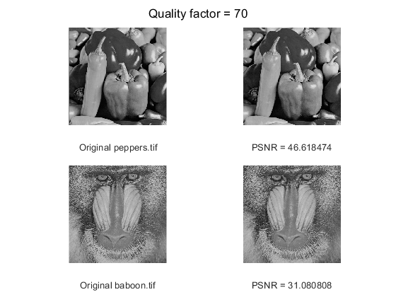
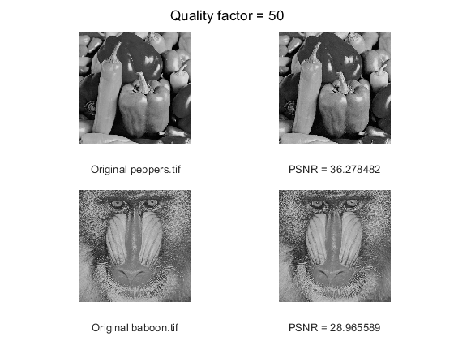
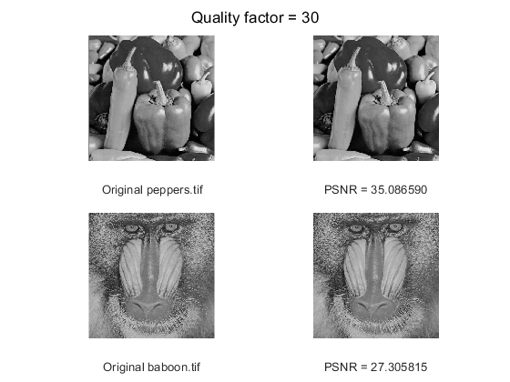

Kleanthis E Karavangelas, Basem Saleh
Contents
Part 1
original images
peps = imread('peppers.tif'); peps_size = dir('peppers.tif').bytes; bab = imread('baboon.tif'); bab_size = dir('baboon.tif').bytes;
Quality factor 90
figure(1) imwrite(peps, 'peppers90.jpg','Quality', 90); peps90_size = dir('peppers90.jpg').bytes; psnr_peps = psnr(imread('peppers90.jpg'), peps); imwrite(bab, 'baboon90.jpg','Quality', 90); bab90_size = dir('baboon90.jpg').bytes; psnr_bab = psnr(imread('baboon90.jpg'), bab); sgtitle('Quality factor = 90'); subplot(2,2,1), imshow(peps), xlabel('Original peppers.tif'); subplot(2,2,2), imshow('peppers90.jpg'), xlabel(sprintf('PSNR = %f', psnr_peps)); subplot(2,2,3), imshow(bab), xlabel('Original baboon.tif'); subplot(2,2,4), imshow('baboon90.jpg'), xlabel(sprintf('PSNR = %f', psnr_bab));
The original peppers.tif image has a size of 259376 bytes, while the QF = 90 image has a size of 48956. The original baboon.tif image has a size of 264750, and the QF = 90 image has a size of 105820 bytes.
Quality factor 10
figure(2) imwrite(peps, 'peppers10.jpg','Quality', 10); peps10_size = dir('peppers10.jpg').bytes; psnr_peps = psnr(imread('peppers10.jpg'), peps); imwrite(bab, 'baboon10.jpg','Quality', 10); bab10_size = dir('baboon10.jpg').bytes; psnr_bab = psnr(imread('baboon10.jpg'), bab); sgtitle('Quality factor = 10'); subplot(2,2,1), imshow(peps), xlabel('Original peppers.tif'); subplot(2,2,2), imshow('peppers10.jpg'), xlabel(sprintf('PSNR = %f', psnr_peps)); subplot(2,2,3), imshow(bab), xlabel('Original baboon.tif'); subplot(2,2,4), imshow('baboon10.jpg'), xlabel(sprintf('PSNR = %f', psnr_bab));
The original peppers.tif image has a size of 259376 bytes, while the QF = 10 image has a size of 8221. The original baboon.tif image has a size of 264750, and the QF = 10 image has a size of 13258 bytes.
Quality factor 70
figure(3) imwrite(peps, 'peppers70.jpg','Quality', 70); peps70_size = dir('peppers70.jpg').bytes; psnr_peps = psnr(imread('peppers70.jpg'), peps); imwrite(bab, 'baboon70.jpg','Quality', 70); bab70_size = dir('baboon70.jpg').bytes; psnr_bab = psnr(imread('baboon70.jpg'), bab); sgtitle('Quality factor = 70'); subplot(2,2,1), imshow(peps), xlabel('Original peppers.tif'); subplot(2,2,2), imshow('peppers70.jpg'), xlabel(sprintf('PSNR = %f', psnr_peps)); subplot(2,2,3), imshow(bab), xlabel('Original baboon.tif'); subplot(2,2,4), imshow('baboon70.jpg'), xlabel(sprintf('PSNR = %f', psnr_bab));
The original peppers.tif image has a size of 259376 bytes, while the QF = 70 image has a size of 33276. The original baboon.tif image has a size of 264750, and the QF = 70 image has a size of 57172 bytes.
Quality factor 50
figure(4) imwrite(peps, 'peppers50.jpg','Quality', 50); peps50_size = dir('peppers50.jpg').bytes; psnr_peps = psnr(imread('peppers50.jpg'), peps); imwrite(bab, 'baboon50.jpg','Quality', 50); bab50_size = dir('baboon50.jpg').bytes; psnr_bab = psnr(imread('baboon50.jpg'), bab); sgtitle('Quality factor = 50'); subplot(2,2,1), imshow(peps), xlabel('Original peppers.tif'); subplot(2,2,2), imshow('peppers50.jpg'), xlabel(sprintf('PSNR = %f', psnr_peps)); subplot(2,2,3), imshow(bab), xlabel('Original baboon.tif'); subplot(2,2,4), imshow('baboon50.jpg'), xlabel(sprintf('PSNR = %f', psnr_bab));
The original peppers.tif image has a size of 259376 bytes, while the QF = 50 image has a size of 27405. The original baboon.tif image has a size of 264750, and the QF = 50 image has a size of 41548 bytes.
Quality factor 30
figure(5) imwrite(peps, 'peppers30.jpg','Quality', 30); peps30_size = dir('peppers30.jpg').bytes; psnr_peps = psnr(imread('peppers30.jpg'), peps); imwrite(bab, 'baboon30.jpg','Quality', 30); bab30_size = dir('baboon30.jpg').bytes; psnr_bab = psnr(imread('baboon30.jpg'), bab); sgtitle('Quality factor = 30'); subplot(2,2,1), imshow(peps), xlabel('Original peppers.tif'); subplot(2,2,2), imshow('peppers30.jpg'), xlabel(sprintf('PSNR = %f', psnr_peps)); subplot(2,2,3), imshow(bab), xlabel('Original baboon.tif'); subplot(2,2,4), imshow('baboon30.jpg'), xlabel(sprintf('PSNR = %f', psnr_bab));
The original peppers.tif image has a size of 259376 bytes, while the QF = 30 image has a size of 15902. The original baboon.tif image has a size of 264750, and the QF = 30 image has a size of 29624 bytes.
Part 2
Encode
enfile = encode("peppers.tif")
Decode
origZ = decode();
Encode function
function enfile = encode(image) % read the input image I = imread(image); % convert to double type I = im2double(I); % compute the dct on 8x8 blocks dctt = @(blkstruct) dct(blkstruct.data); D = blockproc(I, [8 8], dctt); Qmat = [16 11 10 16 24 40 51 61; 12 12 14 19 26 58 60 55; 14 13 16 24 40 57 69 56; 14 17 22 29 51 87 80 62; 18 22 37 56 68 109 103 77; 24 35 55 64 81 104 113 92; 49 64 78 87 103 121 120 101; 72 92 95 98 112 100 103 99]; % Qmat = [ 17 18 24 47 99 99 99 99; % 18 21 26 66 99 99 99 99; % 24 26 56 99 99 99 99 99; % 47 66 99 99 99 99 99 99; % 99 99 99 99 99 99 99 99; % 99 99 99 99 99 99 99 99; % 99 99 99 99 99 99 99 99; % 99 99 99 99 99 99 99 99;]; % quantize the dct coefficients using the above table quant = @(blkstruct) (blkstruct.data) ./ Qmat; Q = blockproc(D, [8 8], quant); Q = ceil(Q); % convert matrix to vector ZigZag = @(blkstruct) ZigzagMtx2Vector(blkstruct.data); Z = blockproc(Q, [8 8], ZigZag); [rowN, colN] = size(Z); Z = Z'; % entropy encoding enfile = JPEG_entropy_encode(rowN, colN, 8, Qmat, Z, '', 0); end
enfile =
51928
decode function
function origZ = decode() % entropy decoding [irowN, icolN, idtc_block_size, iQmat, iZ] = JPEG_entropy_decode(''); iZ = iZ'; % reconstructing the matrix from the vector Vect = @(blkstruct) Vector2ZigzagMtx(blkstruct.data); Z = blockproc(iZ, [1 64], Vect); % dequantizing the matrix dequant = @(blkstruct) (iQmat .* blkstruct.data); DCT = blockproc(Z, [8 8], dequant); % performing inverse dct on matrix to retrieve image indct = @(blkstruct) idct(blkstruct.data); origZ = blockproc(DCT, [8 8], indct); origZ = uint8(origZ); end